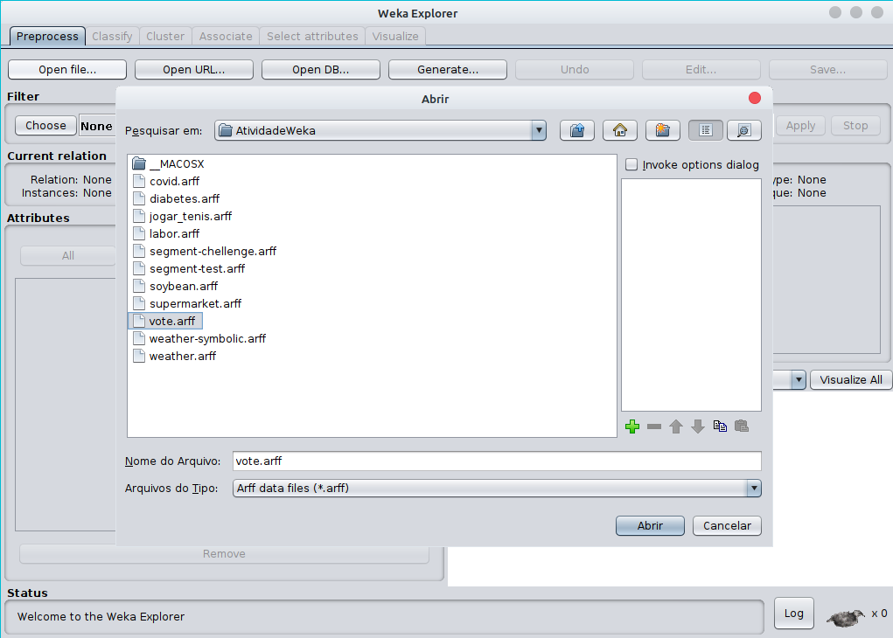
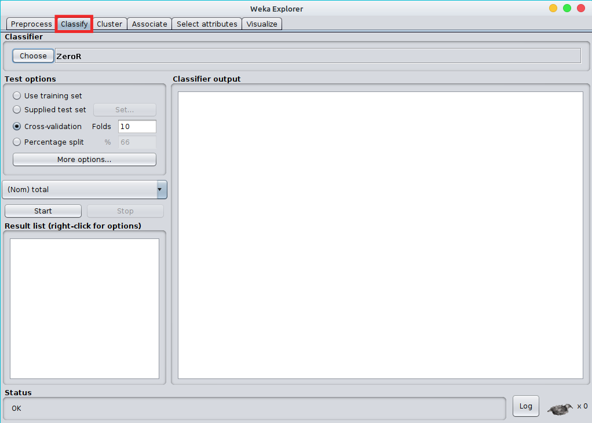
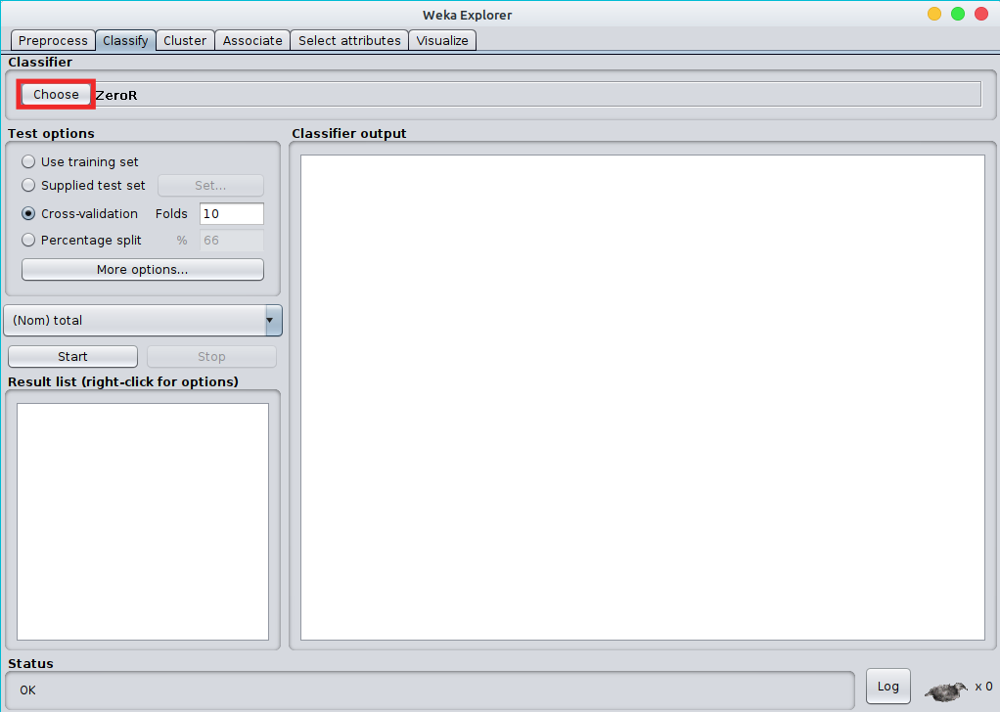
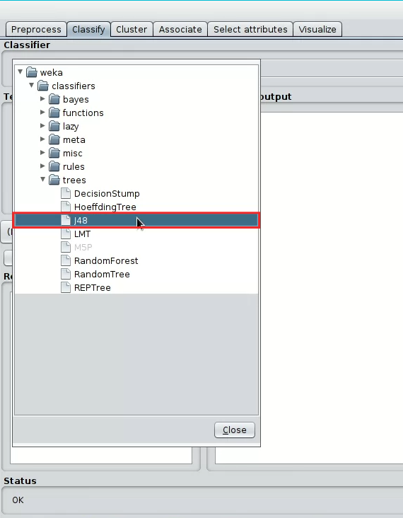
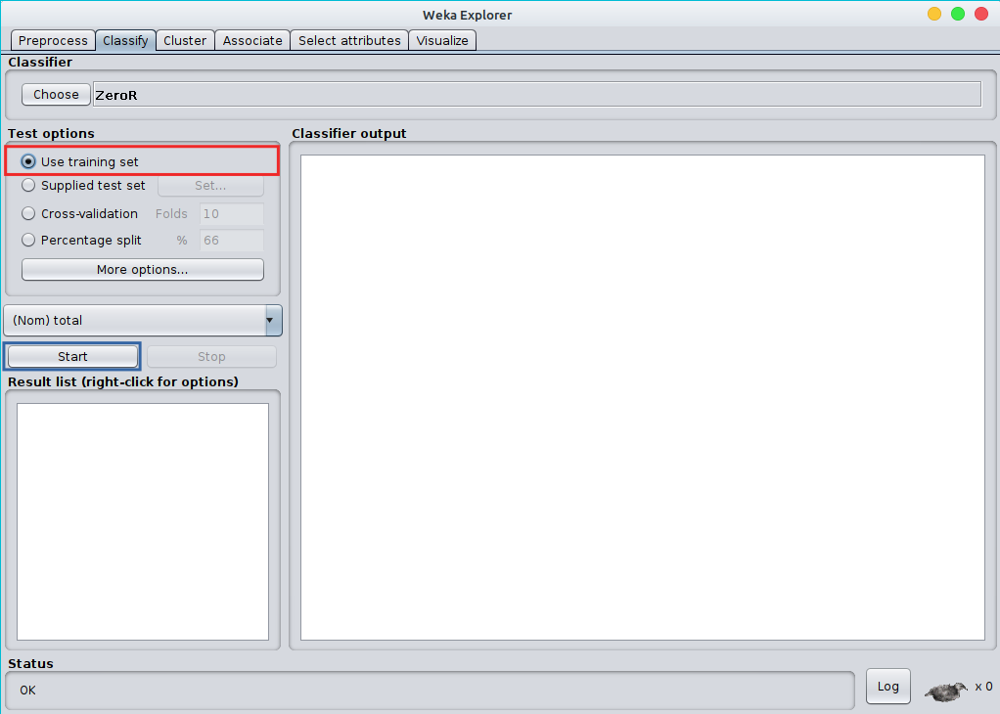
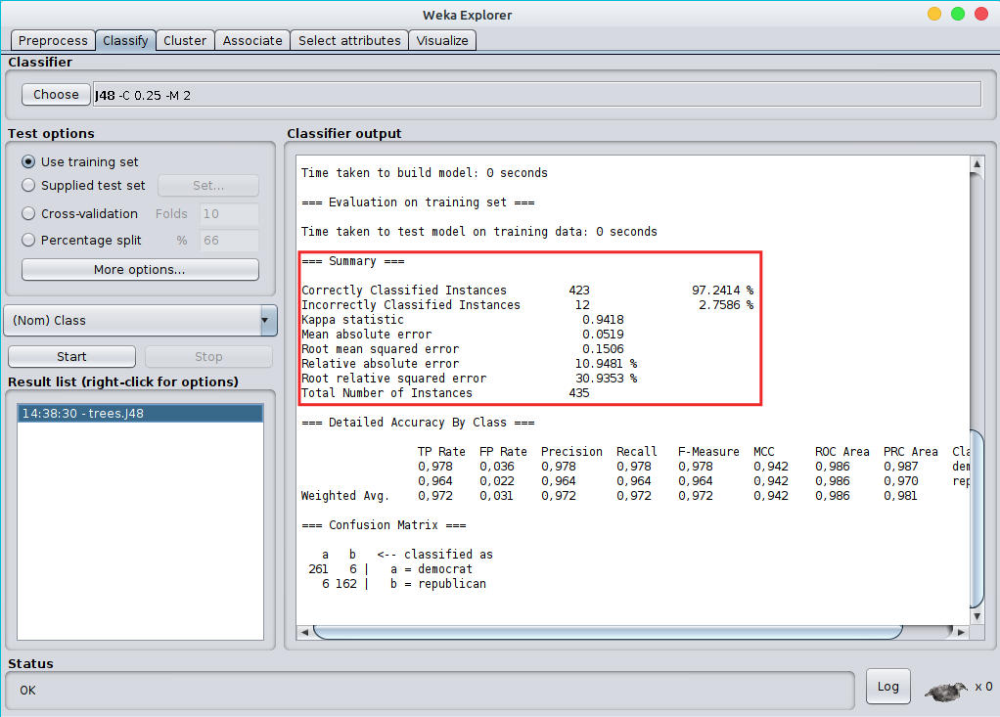
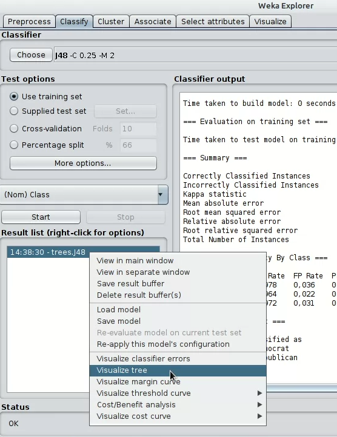
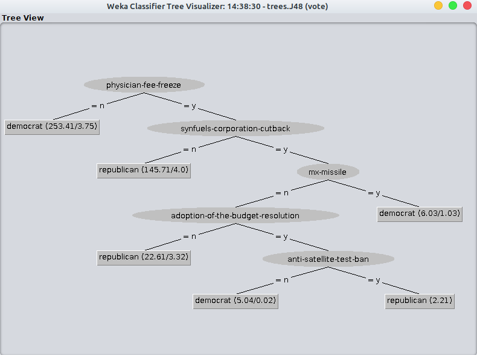

J48
Resumo
Quando uma pessoa tem a sua frente algo onde precisa analizar uma decisão,
a pessoa fica confusa pois o número de opções que pode tomar é gigante, e com
cada escolha tem uma consequência diferente uma que pode prejudicar e outra
que pode ajudar. Uma simples escolha pode levar a diversos caminhos cada
vez mais complexos, é nessas ocasiões onde a Árvore de Decisões se
torna extremamente importante para o andamento do projeto, ou da decisão que
precisa ser tomada. A Árvore de Decisões é uma ferramenta de
suma importância em casos onde é preciso a tomada de uma decisão, esssa
ferramenta ajudas muito nesses casos já que ela oferece um mapa onde é possível
ver as decisões e suas consequências, e assim dando um norte para um certo
projeto ou empresa.
Por que usar uma Árvore de Decisão?
Com o passa do anos as empresa vem sendo cobradas e mais cobradas em relação
ao desempenho obtido, escolhas rápidas são um verdadeiro fracasso e passam longe
de serem propostas, por isso a Árvore de Decisões é bem importante
pois além da rapidez em uma resposta também fica mais facil tomar decisões, já
que é possivel visualizar os melhores caminhos para determinada decisão.
Ultilizando a ferramenta J48
Primeiramente irei ultilizar um arquivo com dados já fornecidos que estarei
deixando o link AQUI.
Copie todo o texto que está no aquivo acima e cole em algum editor de texte de
sua preferência, não se esqueça de salva-lo como .arff. Se você chegou aqui mas
não sabe o que é um arquivo com a extenção .arff, selecione a opção 'COMO USAR'
em nosso menu.
Após salvar o arquivo, e já saber o que é .arff abra o Weka.
Selecione a opção Explorer.

Selecione a opção Open file.

Selecione o arquivo que desejar e clique em Abrir.

Após abrir o aquivo selecione a opção Classify.

Seleicone a opção Choose.

Selecione a opção J48.

Agora preste bem ATENÇÃO, selecione a opção Use training set.
Selecione agora Start.

Podemos ver ao lado as estatísticas de erros e acertos.

Clique com o botão do mouse emcima de trees.j48, e selecione a opção Vizualize tree.

Em seguida será exibida uma Árvore.

E é a partir dessa árvore que poderemos tomar uma decisão, ou até
mesmo analizar os dados de uma maneira mais expecífica. Esse dado que
usei como exemplo tem uma árvore com tais dados mas isso varia de dado
para dado. Vocês podem estar se pensando mas por que ultilizar esse dado,
bom esse dado pode ser bem util em casos onde é preciso fazer uma
estatística sobre a votação. Esse dado se bem ultilizado pode trazer grandes
benefícios para determinadas áreas de serviços, como pro exmplo, jornalistas
ou até mesmo para o governo e sua população.